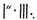

EIN MESSER IM DUNKELN
Als sie im Gasthaus von Bree schlafen gingen, lag Bockland schon im Dunkeln, und Nebelschwaden krochen in die Bodensenken und am Flussufer entlang. In Krickloch war es still. Der dicke Fredegar Bolger öffnete die Tür einen Spalt weit und spähte hinaus. Ein Gefühl der Furcht war den ganzen Tag über in ihm angewachsen; er fand keine Ruhe und konnte nicht zu Bett gehen. Eine verhaltene Drohung schien in der unbewegten Nachtluft zu hängen. Als er in die Dunkelheit hinausstarrte, regte sich ein schwarzer Schatten unter den Bäumen; die Gartenpforte schien sich von selbst zu öffnen und lautlos wieder zu schließen. Entsetzen packte ihn. Er trat zurück und blieb einen Moment zitternd in der Diele stehen. Dann machte er die Tür zu und schob den Riegel vor.
Tiefer in der Nacht waren leise Hufgeräusche zu hören. Pferde wurden in aller Stille auf dem Fußweg herangeführt. Vor der Pforte blieben sie stehen, und drei schwarze Gestalten kamen herein, wie Nachtschatten, die über den Boden krochen. Die eine trat an die Tür, die andern zu beiden Seiten an die Ecken des Hauses; und dort blieben sie stehen, reglos wie Schatten von Steinen, während die Nacht langsam hinging. Das Haus und die stillen Bäume schienen atemlos auf etwas zu warten.
Ein schwaches Lüftchen ging durchs Laub, und ein Hahn krähte in der Ferne. Die kalte Stunde vor Morgengrauen war angebrochen. Der Schatten an der Tür regte sich. Durch die mond- und sternlose Finsternis schimmerte kalt eine gezogene Klinge. Ein dumpfer, wuchtiger Schlag ließ die Tür erzittern: »Machet auf, in Mordors Namen, machet auf!«, sagte eine dünne, drohende Stimme.
Ein zweiter Schlag, und die Tür gab nach und fiel mit splitternden Brettern und zerbrochenem Riegel nach innen. Rasch huschten die schwarzen Gestalten hinein.
Im gleichen Augenblick erschallte zwischen den nahen Bäumen ein Horn. Es zerriss die Nacht wie Feuerschein von einem Berggipfel.
WACHET AUF! GEFAHR! FEUER! FEINDE! WACHET AUF!
Fredegar Bolger war nicht untätig geblieben. Sobald er die Gestalten im Garten heranschleichen sah, wurde ihm klar, dass er die Beine in die Hand nehmen musste, wenn ihm sein Leben lieb war. Er rannte los: zur Hintertür raus, durch den Garten, über die Felder. Am nächsten Haus, über eine Meile entfernt, brach er auf der Türschwelle zusammen. »Nein, nein, nein!« schrie er. »Nein, nicht ich! Ich hab ihn nicht!« Es dauerte eine Weile, bis jemand aus seinem Gestammel klug wurde. Aber endlich begriffen die Nachbarn, dass Feinde in Bockland waren, irgendwelche fremdartigen Eindringlinge aus dem Alten Wald. Und dann verloren sie keine Zeit.
GEFAHR! FEUER! FEINDE!
Die Brandybocks bliesen das bockländische Hornsignal, das man seit hundert Jahren nicht mehr gehört hatte, seit dem harten Winter, als die weißen Wölfe über den zugefrorenen Brandywein kamen.
WACHET AUF! WACHET AUF!
Von fern hörte man andere Hörner antworten. Der Alarm wurde weitergegeben.
Die Schattenmänner ergriffen die Flucht. Einer ließ, als er aus dem Haus rannte, auf der Schwelle einen Hobbitmantel fallen. Auf dem Feldweg brach Hufgetrappel los und schwoll an zu einem hämmernden Galopp durch die Dunkelheit. Überall um Krickloch hörte man nun die Hornstöße, überall Geschrei und Getrappel rennender Füße. Doch die Schwarzen Reiter ritten wie ein Sturmwind zum Nordtor. Sollten die kleinen Leute nur blasen, so viel sie wollten! Die würde Sauron sich später noch vornehmen. Einstweilen hatten sie Wichtigeres zu tun: Sie wussten nun, dass das Haus leer und der Ring fort war. Sie ritten die Wachen am Tor nieder und verschwanden aus dem Auenland.
Früh in der Nacht erwachte Frodo plötzlich aus tiefem Schlaf, als hätte ein Laut oder eine Erscheinung ihn aufgeschreckt. Er sah, dass Streicher in seinem Sessel saß: Seine Augen schimmerten im Schein des Feuers, das er unterhielt und das hell brannte; er war wach, verriet es aber durch kein Zeichen und keine Bewegung.
Bald war Frodo wieder eingeschlafen, doch wieder wurden seine Träume beunruhigt, diesmal durch Windesbrausen und Pferdehufe in donnerndem Galopp. Der Wind schien das Haus zu umschlingen und daran zu rütteln, und von fern kamen heftige Hornstöße. Er machte die Augen auf und hörte einen Hahn auf dem Hof übermütig krähen. Streicher hatte die Vorhänge aufgezogen und die Läden mit einem Knall beiseite gestoßen. Das erste graue Tageslicht erhellte das Zimmer, und durchs offene Fenster strömte kalte Luft herein.
Sobald Streicher sie alle geweckt hatte, führte er sie zu den Schlafzimmern. Als sie hinkamen, sahen sie, dass sie froh sein konnten, seinen Rat befolgt zu haben: Die Fenster waren aufgebrochen worden und hingen lose in den Angeln, die Vorhänge flatterten im Wind, die Betten waren um und um gewühlt, die Kissen aufgeschlitzt am Boden, und die braune Decke war in Fetzen gerissen.
Sofort ging Streicher den Wirt holen. Der arme Herr Butterblüm, unausgeschlafen, war entsetzt. Die ganze Nacht hatte er kaum ein Auge zugetan, sagte er, aber gehört hatte er nichts.
»So was ist mir ja im Leben noch nicht passiert!«, rief er händeringend. »Können denn die Gäste nicht mehr unbehelligt in ihren Betten schlafen! Und die guten Kissen sind auch hin, und was nicht noch alles! Was kommt denn da noch auf uns zu?«
»Finstere Zeiten!«, sagte Streicher. »Aber einstweilen wird man dich wohl in Ruhe lassen, wenn du uns erst los bist. Wir brechen gleich auf. Vergiss das Frühstück; ein Schluck und ein Happen im Stehen müssen genügen. In ein paar Minuten haben wir gepackt.«
Herr Butterblüm rannte los, um ihre Ponys bereitmachen zu lassen und den »Happen« herbeizuschaffen. Aber gleich kam er verzweifelt wieder: Die Ponys waren verschwunden! Alle Stalltüren waren in der Nacht geöffnet worden, und die Tiere waren fort, nicht nur Merrys Ponys, sondern sämtliche Ponys und Pferde, die dort gestanden hatten.
Frodo war niedergeschmettert. Wie sollten sie jetzt nach Bruchtal gelangen, zu Fuß, gejagt von berittenen Feinden? Der Mond wäre nicht schwerer erreichbar. Streicher saß eine Weile da und schwieg; er sah die Hobbits an, als wollte er ihre Kraft und ihren Mut abschätzen.
»Mit Ponys könnten wir den Reitern auf ihren Pferden ohnehin nicht entkommen«, sagte er schließlich, als hätte er erraten, was Frodo im Kopf herumging. »Wir dürften zu Fuß nicht sehr viel langsamer vorankommen, nicht auf den Wegen, die ich einzuschlagen gedenke. Ich wäre ohnehin gelaufen. Nur mit den Vorräten und dem Gepäck wird es schwierig. Wir können für den ganzen Weg bis Bruchtal nicht darauf zählen, irgendetwas Essbares zu finden, sondern müssen alles mitnehmen, und zwar reichlich, denn es kann sein, dass wir aufgehalten werden oder weite Umwege machen müssen. Wie viel könntet ihr euch denn jeder auf den Rücken laden?«
»So viel, wie nötig«, sagte Pippin, Böses ahnend, aber bestrebt zu zeigen, dass er stärker war, als man ihm ansah (und er selbst es sich zutraute).
»Ich kann für zwei tragen«, sagte Sam herausfordernd.
»Kann man da nichts machen, Herr Butterblüm?«, fragte Frodo. »Könnten wir im Dorf nicht ein paar Ponys bekommen, oder wenigstens eines für das Gepäck? Mieten könnten wir sie nicht, glaube ich, aber vielleicht kaufen«, fügte er hinzu, doch im Zweifel, ob er sie bezahlen könnte.
»Ich fürchte, nein«, sagte der Wirt bekümmert. »Die zwei, drei Reitponys, die es in Bree gab, standen bei mir im Stall und sind fort. Und andere Tiere, Zugpferde, Lastponys und dergleichen, davon gibt es hier in Bree sehr wenige, und die werden nicht verkäuflich sein. Aber ich will sehn, was man tun kann. Ich scheuche gleich mal Bob aus dem Bett. Er soll schleunigst losgehn und herumfragen.«
»Ja«, sagte Streicher zögernd, »das wäre nicht schlecht. Ich fürchte, wir müssen versuchen, wenigstens ein Pony zu bekommen. Aber damit entfällt jede Hoffnung, früh aufzubrechen und unbemerkt zu verschwinden. Ebenso gut könnten wir mit einem Hornruf unsere Abreise verkünden. Das gehört sicher mit zum Plan unserer Verfolger.«
»Ein Gutes hat die Sache immerhin«, sagte Merry. »Nicht viel, aber doch etwas: Während wir warten müssen, können wir frühstücken – und nicht im Stehen! Nob soll sich gleich darum kümmern.«
Am Ende verloren sie über drei Stunden. Bob kam zurück und meldete, in der Nachbarschaft sei kein Pony aufzutreiben, weder für Geld noch für gute Worte – bis auf eines, das Lutz Farnrich gehöre, der es unter Umständen verkaufen würde. »Ein elendes Tier«, sagte Bob, »alt und halb verhungert, aber wie ich den Farnrich kenne, gibt er es nicht unter dem Dreifachen seines Wertes her, weil er ja weiß, in welcher Lage ihr seid.«
»Lutz Farnrich?«, sagte Frodo. »Steckt da nicht etwas dahinter? Ob uns das Tier nicht ausreißt und mit allen unseren Sachen zu ihm zurückrennt? Oder es könnte irgendwie helfen, uns aufzuspüren oder so etwas?«
»Frag ich mich auch«, sagte Streicher. »Aber ich kann mir kein Tier vorstellen, das freiwillig zu dem zurückkehren würde, wenn es einmal weg ist. Ich denke mir, dem lieben Herrn Farnrich geht es nur um die Nebeneinnahme: Er will bei der Sache einfach noch ein bisschen Extraprofit machen. Mein größtes Bedenken ist, dass das arme Vieh womöglich dem Tode nah ist. Aber es scheint, wir haben keine Wahl. Wie viel verlangt er denn?«
Der Preis war zwölf Silberpfennige: tatsächlich mindestens dreimal so viel, wie das Pony in dieser Gegend wert war. Es erwies sich als ein knochiges, unterernährtes und verdrossenes Tier, sah aber nicht so aus, als stünde sein Ende unmittelbar bevor. Herr Butterblüm bezahlte es aus seiner Tasche und gab Merry weitere achtzehn Pfennige als Entschädigung für die verschwundenen Ponys. Er war ein Ehrenmann und nach breeländischen Maßstäben wohlhabend; dennoch waren dreißig Silberpfennige ein schwerer Verlust für ihn, und ausgerechnet von Lutz Farnrich darum geprellt zu werden, machte alles noch schwerer erträglich.
Tatsächlich kam er am Ende gar nicht so schlecht weg. Wie sich später herausstellte, war nur ein Pferd wirklich gestohlen worden. Die anderen waren nur weggetrieben oder so erschreckt worden, dass sie durchgingen; sie wurden in allerlei Winkeln des Breelandes wiedergefunden. Merrys Ponys waren alle zusammen entkommen und fanden (dank ihrem gesunden Ponyverstand) den Weg zu den Höhen, auf der Suche nach dem dicken Plumpel. So kamen sie für einige Zeit in Tom Bombadils Obhut, wo sie gut dran waren. Doch als Tom von den Ereignissen in Bree hörte, schickte er sie zu Herrn Butterblüm, der letztlich also für fünf gute Tiere einen sehr mäßigen Preis bezahlt hatte. In Bree mussten sie schwerer arbeiten, aber Bob behandelte sie anständig. Alles in allem hatten sie Glück gehabt: Sie versäumten eine unheimliche und gefährliche Reise. Aber nach Bruchtal kamen sie nie.
Einstweilen aber musste Herr Butterblüm annehmen, dass er sein Geld in den Rauch schreiben konnte. Und er bekam noch mehr Probleme. Denn es gab einen großen Aufruhr, als die anderen Gäste morgens von dem nächtlichen Überfall auf das Gasthaus erfuhren. Die Reisenden aus dem Süden hatten mehrere Pferde eingebüßt und gaben lauthals dem Wirt die Schuld, bis bekannt wurde, dass einer der ihren ebenfalls in der Nacht verschwunden war, und zwar niemand anders als Lutz Farnrichs schieläugiger Kumpan. Sogleich fiel der Verdacht auf ihn.
»Wenn ihr euch mit einem Pferdedieb zusammentut und ihn in mein Haus mitbringt«, sagte Herr Butterblüm wütend, »dann solltet ihr auch für den Schaden selbst geradestehen und nicht kommen und mir etwas vorzetern. Geht doch zu Farnrich und fragt ihn, wo euer schöner Freund ist!« Aber anscheinend war der Mann niemandes Freund, und niemand konnte sich erinnern, wann und wie er zu der Reisegesellschaft gestoßen war.
Nach dem Frühstück mussten die Hobbits umpacken und ihre Vorräte für die längere Reise ergänzen, auf die sie sich nun einrichten mussten. Erst kurz vor zehn Uhr waren sie fertig. Inzwischen war ganz Bree in heller Aufregung. Frodos unerklärliches Verschwinden beim Tanz auf einem Biertisch, das Auftauchen der Schwarzen Reiter, die Plünderung der Ställe und nicht zuletzt die Neuigkeit, dass sich der Waldläufer Streicher den geheimnisvollen vier Hobbits angeschlossen hatte: All dies ergab eine Geschichte, mit der man sich über viele ereignislose Jahre hinwegtrösten konnte. Die meisten Bewohner von Bree und Stadel und sogar noch viele aus Schlucht und Archet drängten sich an der Straße, um den Aufbruch der Reisenden mit anzusehen. Die anderen Gäste des Tänzelnden Ponys standen an den Türen oder lehnten sich aus den Fenstern.
Streicher hatte es sich anders überlegt; er wollte Bree nun auf der Hauptstraße verlassen. Jeder Versuch, sofort querfeldein zu gehen, würde ihre Lage nur verschlimmern: Halb Bree würde ihnen nachlaufen, um zu sehen, was sie vorhätten, und um sie am unbefugten Betreten der Felder zu hindern.
Sie sagten Nob und Bob auf Wiedersehn und sprachen Herrn Butterblüm zum Abschied ihren herzlichen Dank aus. »Hoffentlich sehen wir uns eines Tages unter freundlicheren Umständen wieder«, sagte Frodo. »Nichts wäre mir lieber als eine ruhige Zeit als Gast in Ihrem vortrefflichen Haus.«
Besorgt und bedrückt marschierten sie los, unter den Blicken der Menge. Nicht alle Gesichter waren freundlich und auch nicht alle Worte, die man ihnen zurief. Aber mit Streicher schienen die meisten Breeländer sich nicht anlegen zu wollen; und alle, die er scharf ansah, hielten den Mund und wichen zurück. Er ging mit Frodo voran, dann kamen Merry und Pippin und zuletzt Sam mit dem Pony, dem sie so viel von ihrem Gepäck aufgeladen hatten, wie sie irgend übers Herz brachten; trotzdem schaute es schon nicht mehr ganz so missmutig drein und schien sich mit seinem veränderten Los abgefunden zu haben. Sam kaute nachdenklich an einem Apfel. Er hatte die Tasche voller Äpfel, ein Abschiedsgeschenk von Nob und Bob. »Äpfel im Gehen und eine Pfeife im Sitzen«, sagte er. »Aber ich schätze, beides werd ich bald sehr vermissen.«
Die Hobbits achteten nicht auf die Köpfe, die neugierig aus den halb offenen Türen lugten oder über den Mauern und Zäunen auftauchten, als sie vorübergingen. Doch als sie sich dem Südtor näherten, sah Frodo ein düsteres, verwahrlostes Gemäuer hinter einer dichten Hecke: das letzte Haus des Dorfes. In einem der Fenster erkannte er ein fahles, schlitzäugiges Gesicht, das sofort wieder verschwand.
»Hier also hält sich dieser Südländer versteckt«, dachte er. »Der sieht doch beinah wie ein Ork aus.«
Über die Hecke hinweg glotzte ein anderer Mensch sie frech an. Er hatte dichte schwarze Brauen und dunkle, verächtlich dreinblickende Augen; der breite Mund verzog sich zu einem hämischen Grinsen. Er rauchte eine kurze schwarze Pfeife. Als sie herankamen, nahm er sie aus dem Mund und spuckte aus.
»Morgen, Langstelz!«, sagte er. »So früh auf den Beinen? Endlich doch noch Freunde gefunden, was?« Streicher nickte nur und gab keine Antwort.
»Morgen, meine kleinen Freunde!«, sagte Farnrich zu den Hobbits. »Ich denke, ihr wisst ja wohl, mit wem ihr euch da einlasst? Das ist Streicher der Unerschrockene, weil er nämlich vor nichts zurückschreckt. Aber ich hab auch schon andere Namen für ihn gehört, nicht so freundliche. Passt bloß auf heute Nacht! Und du, Sammi, behandle mein armes altes Pony nicht schlecht! Pöh!« Er spuckte noch einmal aus.
Rasch drehte Sam sich zu ihm um. »Und du, Farnrich«, sagte er, »versteck deine widerliche Fratze, sonst kriegt sie was ab!« Eine blitzschnelle Handbewegung, und ein Apfel traf Farnrich voll auf die Nase. Zu spät duckte er sich, und seine Flüche kamen hinter der Hecke vor. »Schade um den guten Apfel!«, sagte Sam bedauernd und ging weiter.
Endlich ließen sie das Dorf hinter sich. Der Schwarm von Kindern und Neugierigen, die ihnen nachgelaufen waren, wurde es müde und machte am Südtor kehrt. Nachdem sie das Tor passiert hatten, gingen sie noch ein paar Meilen weiter auf der Straße. Sie bog nach links um den Fuß des Breebergs, bis sie ihre östliche Richtung wieder gefunden hatte, und führte dann, rasch abfallend, in Waldland hinein. An den flacheren südöstlichen Berghängen zur Linken konnten sie manche der Häuser und Hobbithöhlen von Stadel sehen. Aus einer tiefen Mulde etwas nördlich von der Straße stiegen Rauchsträhnen auf, die anzeigten, wo das Dorf Schlucht lag. Archet dagegen, weiter hinten in den Wäldern, war nicht zu sehen.
Nach einem Stück bergab, als der Breeberg schon hoch und braun hinter ihnen zurückblieb, kamen sie zu einem schmalen Seitenweg, der nach Norden abzweigte. »Hier verlassen wir das offene Gelände und gehen in Deckung«, sagte Streicher.
»Hoffentlich keine Abkürzung«, sagte Pippin. »Neulich hätte uns eine Abkürzung durch den Wald beinah auf kürzestem Weg in die Katastrophe geführt.«
»Nicht, wenn ich dabei bin«, sagte Streicher lächelnd. »Ob Abkürzung oder Umweg, ich komme gewöhnlich da an, wo ich hin will.« Er blickte in beiden Richtungen die Straße entlang. Niemand war zu sehen. Schnell ging er voran in das bewaldete Tal.
Soweit sie seinen Plan verstehen konnten, ohne die Gegend zu kennen, hatte er vor, zuerst in Richtung Archet zu gehen, aber etwas weiter rechts und östlich daran vorüber, und dann so geradezu, wie in dem unwegsamen Gelände möglich, auf die Wetterspitze zuzuhalten. Auf diese Weise würden sie, wenn alles gut ging, den großen Bogen abschneiden, in dem die Straße bald nach Süden um die Mückenwassermoore herumführte. Allerdings mussten sie dann das Sumpfland durchqueren, was nach allem, was Streicher dazu sagte, kein reines Vergnügen zu werden versprach.
Einstweilen aber war der Fußmarsch nicht unangenehm. Wären die störenden Vorfälle der letzten Nacht nicht gewesen, so hätten sie an diesem Teil ihrer Reise sogar mehr Freude gehabt als an allen anderen bisher. Die Sonne schien freundlich, nicht sengend. Der Wald im Tal war noch farbenfroh belaubt; er wirkte friedlich und gefahrlos. Streicher führte sie sicheren Schritts über viele sich kreuzende Pfade, auf denen sie sich ohne ihn in kürzester Zeit verlaufen hätten. Er hielt einen Kurs mit vielen Haken und Kehrtwendungen, und wer sie etwa verfolgte, würde es schwer haben, ihnen auf der Spur zu bleiben.
»Farnrich hat sicherlich beobachtet, wo wir von der Straße abgewichen sind«, sagte er, »aber ich glaube nicht, dass er selbst uns folgen wird. Er kennt zwar die Umgegend recht gut, wird aber wissen, dass er es im Walde mit mir nicht aufnehmen kann. Nur was er anderen berichten könnte, macht mir Sorgen. Ich vermute, sie sind nicht weit von hier. Wenn sie denken, wir gehen nach Archet, dann um so besser.«
Ob es nun an Streichers kundiger Führung lag oder woran immer, jedenfalls sahen und hörten sie den ganzen Tag nichts von einem anderen lebenden Geschöpf, weder einem zweibeinigen (außer Vögeln) oder einem vierbeinigen (außer einem Fuchs und ein paar Eichhörnchen). Am nächsten Tag änderten sie den Kurs und gingen nun geradezu nach Osten; und noch immer war alles still und friedlich. Am dritten Tag nach dem Abmarsch aus Bree ließen sie den Chetwald hinter sich. Seit sie die Straße verlassen hatten, war das Gelände stetig abgefallen, und nun traten sie in ein weites Stück Flachland hinaus, in dem das Vorankommen sehr viel schwieriger wurde. Sie waren nun schon weit außerhalb der Grenzen des Breelandes, in der weglosen Wildnis, und sie näherten sich den Mückenwassermooren.
Der Boden wurde feucht, stellenweise sumpfig, und hier und da kamen sie an Tümpeln und großen Schilf- und Binsenfeldern vorüber, die vom Gezwitscher kleiner, unsichtbarer Vögel erfüllt waren. Den Weg zu finden, erforderte viel Umsicht, wenn die Füße trocken bleiben und der richtige Kurs gehalten werden sollte. Zuerst ging es noch zügig vorwärts, bald aber langsamer, und der Weg wurde gefährlicher. Die Moore waren verwirrend und tückisch, und selbst für einen Waldläufer gab es zwischen den sich verschiebenden Sumpflöchern keinen dauerhaft zuverlässigen Pfad. Fliegen begannen sie zu plagen, und in der Luft hingen Wolken von winzigen Mücken, die ihnen in die Ärmel, Hosenbeine und ins Haar krochen.
»Ich werde bei lebendigem Leibe aufgefressen!« jammerte Pippin. »Von wegen Mückenwasser! Es gibt ja mehr Mücken als Wasser hier!«
»Wovon leben die bloß, wenn sie kein Hobbitblut kriegen?«, sagte Sam und kratzte sich am Hals.
In dieser öden und unwirtlichen Gegend brachten sie einen ganzen Tag zu. An einem feuchten, kalten und äußerst ungemütlichen Platz mussten sie ihr Nachtlager aufschlagen; und das blutgierige Ungeziefer ließ sie nicht schlafen. Außerdem steckten im Schilf und Riedgras abscheuliche Kreaturen, die dem Lärm nach, den sie machten, bösartige Verwandte der Grillen sein mussten. Zu Tausenden kreischten sie ringsum, niiik-zriiik, zriiik-niiik, unaufhörlich, die ganze Nacht durch, bis die Hobbits schier verrückt wurden.
Am nächsten, dem vierten Tag, erging es ihnen nicht viel besser, und die Nacht war fast ebenso unruhig. Zwar waren sie den Nikerzukern (wie Sam sie nannte) nun entkommen, doch die Mücken verfolgten sie immer noch.
Müde, aber ohne ein Auge zutun zu können, lag Frodo auf dem Boden. Weit im Osten, so schien ihm, sah er einen Lichtschein am Himmel, der viele Mal aufblitzte und wieder erlosch. Die Morgendämmerung konnte es nicht sein, denn bis dahin waren es noch mehrere Stunden.
»Was ist das für ein Licht?«, sagte er zu Streicher, der aufgestanden war und in die Nacht hinausspähte.
»Ich weiß es nicht«, sagte Streicher. »Auf die Entfernung kann man nichts erkennen. Es sieht aus, wie wenn Blitze von den Berggipfeln aufzuckten.«
Frodo legte sich wieder hin, aber noch eine ganze Weile sah er die weißen Blitze und davor, als großen dunklen Umriss, Streicher, wie er stumm dastand und nach Osten spähte. Dann endlich fiel er in einen unruhigen Schlaf.
Am fünften Tag waren sie noch nicht weit gegangen, als die letzten vereinzelten Tümpel und Röhrichte des Moorlandes hinter ihnen zurückblieben. Das Gelände vor ihnen stieg langsam wieder an. Weit im Osten konnten sie nun eine Bergkette erkennen. Der höchste Gipfel lag am rechten Ende, ein Stück abseits von den anderen. Er war kegelförmig und oben etwas abgeflacht.
»Das ist die Wetterspitze«, sagte Streicher. »Die alte Straße, die wir weit rechts von uns haben liegen lassen, verläuft südlich an ihr vorbei, nicht weit von ihrem Fuß. Morgen Mittag könnten wir da sein, wenn wir gerade draufzugehen. Aber ob wir das tun sollten?«
»Was meinst du?«, fragte Frodo.
»Ich meine, wenn wir dort hinkommen, wissen wir nicht, was uns erwartet. Es ist nah an der Straße.«
»Aber wir hoffen doch, Gandalf dort zu treffen?«
»Ja, aber das ist nur eine schwache Hoffnung. Wenn er überhaupt diesen Weg nimmt, kommt er doch vielleicht nicht durch Bree und erfährt nicht, wo wir sein könnten. Und wenn wir nicht durch schieres Glück fast gleichzeitig mit ihm dort ankommen, verpassen wir ihn ohnehin. Ebenso wenig wie wir wird er es riskieren können, dort lange zu warten. Wenn die Reiter uns in der Wildnis nicht finden können, werden sie wahrscheinlich auch zur Wetterspitze kommen. Von dort kann man das Land rundum weit überblicken. Es gibt Vögel und anderes Getier in diesem Land, die uns jetzt, wo wir hier stehen, von dem Berggipfel aus sehen könnten. Nicht allen Vögeln ist zu trauen, und es gibt noch andere Späher, noch schlimmere.«
Besorgt schauten die Hobbits zu den fernen Bergen hin. Sam blickte zum blassblauen Himmel auf, um zu sehen, ob keine Falken oder Adler mit scharfen Späheraugen über ihnen kreisten. »Wenn man dir zuhört, kommt man sich ganz hilflos und verlassen vor, Streicher!«, sagte er.
»Was rätst du uns?«, fragte Frodo.
»Ich denke«, antwortete Streicher zögernd, als ob er es selbst noch nicht recht wüsste, »ich denke, das Beste wird sein, von hier so geradewegs wie möglich nach Osten zu gehen, auf die Bergkette zu, nicht zur Wetterspitze. Dort kenne ich einen Pfad, der am Fuß der Berge entlangführt; auf dem kommen wir von Norden und nicht so weithin sichtbar zur Wetterspitze. Und dann werden wir sehen.«
Den ganzen Tag lang stapften sie dahin, bis in den kalten und frühen Abend hinein. Das Land wurde kahler und trockener; doch über den Mooren hinter ihnen lagen Dünste und Nebel. Ein paar trübsinnige Vögel piepsten und wimmerten, bis die runde rote Sonne langsam in den Schatten im Westen versank; dann breitete eine leere Stille sich über das Land. Die Hobbits dachten an die milde Abendsonne, wie sie im fernen Beutelsend durch die freundlichen Fenster hereinschien.
Gegen Abend kamen sie an einen Bach, der von den Bergen herabfloss und sich in den stehenden Wassern des Sumpflandes verlor; und seinem Lauf folgten sie aufwärts, solange noch Licht war. Es wurde schon Nacht, als sie endlich Halt machten und am Ufer des Baches unter verkrüppelten Erlen ihr Lager aufschlugen. Vor ihnen ragten nun die kahlen Bergrücken in den düsteren Himmel. In dieser Nacht stellten sie eine Wache auf, und Streicher schien überhaupt nicht zu schlafen. Es war zunehmender Mond, und in den frühen Nachtstunden lag ein kaltes graues Licht über dem Land.
Am nächsten Morgen machten sie sich bald nach Sonnenaufgang wieder auf den Weg. Frost lag in der Luft, und der Himmel war blassblau. Die Hobbits fühlten sich munter, als hätten sie die Nacht ungestört durchgeschlafen. Allmählich gewöhnten sie sich an die langen Märsche bei knappen Rationen – so knappen, dass sie nach auenländischer Ansicht eigentlich nicht ausreichen konnten, einen Hobbit auf den Beinen zu halten. Pippin behauptete, aus Frodo wäre inzwischen schon ein doppelt so stattlicher Hobbit wie zuvor geworden.
»Eigenartig«, sagte Frodo und schnallte den Gürtel enger, »wenn man bedenkt, dass doch tatsächlich nun einiges weniger an mir dran ist. Hoffentlich geht diese Abmagerungskur nicht endlos so weiter, sonst bin ich bald ein Geist.«
»Sprich nicht von so etwas!«, sagte Streicher hastig und überraschend ernst.
Die Berge kamen näher. Die wellenförmige Kammlinie stieg an vielen Stellen fast tausend Fuß hoch an und fiel anderswo zu tiefen Schluchten und Pässen ab, die ins östliche Land auf der andern Seite führten. Auf den Kammhöhen konnten die Hobbits Formen erkennen, die wie grün überwachsene Reste von Mauern und Dämmen aussahen, und in den Schluchten standen noch die Ruinen alter steinerner Bauten. Gegen Abend erreichten sie den Fuß der Westhänge und schlugen dort ihr Lager auf. Es war die Nacht des fünften Oktober und die sechste seit ihrem Aufbruch aus Bree.
Am Morgen fanden sie zum ersten Mal, seit sie den Chetwald verlassen hatten, wieder einen deutlich sichtbaren Pfad. Sie bogen rechts ab und folgten ihm in südlicher Richtung. Er war klug angelegt und nahm einen Verlauf, der darauf berechnet schien, ihn soweit wie möglich dem Einblick sowohl von den Hügelkuppen als auch vom Flachland im Westen zu entziehen. Er tauchte in Senken hinab, schmiegte sich an steile Hänge, und wo er durch flacheres und offeneres Gelände führte, war er zu beiden Seiten mit je einer Reihe großer Felsbrocken und behauener Steine eingefasst, die die Reisenden fast wie eine Hecke abschirmten.
»Ich frage mich, wer diesen Weg angelegt hat und zu welchem Zweck«, sagte Merry, als sie einen dieser Gänge entlangschritten, an dem die Steine ungewöhnlich hoch und dicht beieinander standen. »Ich kann nicht behaupten, dass mir das gefällt. Es sieht irgendwie – na, sagen wir, nach Grabwichten aus. Gibt es ein Hügelgrab auf der Wetterspitze?«
»Nein, weder auf der Wetterspitze noch auf einem der andern Berge gibt es ein Hügelgrab«, antwortete Streicher. »Die Menschen aus dem Westen lebten nicht hier; allerdings haben sie in ihren späten Tagen die Hügel eine Weile gegen das Böse, das aus Angmar kam, verteidigt. Dieser Weg diente einst zur Versorgung der Festungen hinter den Schutzwällen. Doch vor langer Zeit, in den frühen Tagen des Nördlichen Königreichs, wurde auf der Wetterspitze oder dem Amon Sûl, wie man den Berg nannte, ein großer Wachtturm erbaut. Er brannte aus und wurde geschleift, und heute ist nichts mehr davon zu sehen als ein Ring von Steintrümmern, ungefähr wie eine Krone auf dem Haupt des alten Berges. Doch einst war er hoch und schön. Es heißt, Elendil soll in den Tagen des Letzten Bündnisses von dort oben nach Gil-galad Ausschau gehalten haben, der von Westen kam.«
Die Hobbits sahen Streicher erstaunt an. Anscheinend kannte er sich in alten Überlieferungen ebenso gut aus wie in allem, was das Leben in der Wildnis betraf. »Wer war denn Gil-galad?«, fragte Merry, aber Streicher war in Gedanken versunken und antwortete nicht. Plötzlich murmelte eine leise Stimme:
Gil-galad hieß er, der die Kron
Der Elben trug, vor Zeiten schon
Als letzter Herr auf freiem Land
Zwischen Gebirg und Meeresstrand.
Sein Schwert war scharf und spitz sein Speer,
Sein Helm erglänzte von weither;
Des Himmels Sterne, Bild an Bild,
Strahlten von seinem Silberschild.
Seit langem klagt um ihn das Lied,
Doch niemand weiß, wohin er schied.
Sein Glanz erlosch, sein Stern ward blind
In Mordor, wo die Schatten sind.
Verblüfft wandten sich die anderen zu dem Sprecher hin, denn es war Sam.
»Weiter kann ich’s nicht«, stammelte Sam und wurde rot. »Das hab ich als Junge von Herrn Bilbo gelernt. Er hat mir viele solche Geschichten erzählt, weil er wusste, wie gern ich von den Elben hörte. Von Herrn Bilbo hab ich auch lesen und schreiben gelernt. Er kannte unglaublich viele Bücher, der gute alte Herr Bilbo. Und Gedichte hat er auch geschrieben. Was ich eben aufgesagt habe, ist von ihm.«
»Aber er hat es nicht frei erfunden«, sagte Streicher. »Es ist ein Stück aus einem Heldenlied, das Gil-galads Ende heißt und in einer alten Sprache geschrieben ist. Bilbo muss es übersetzt haben. Das wusste ich nicht.«
»Es war noch viel länger«, sagte Sam, »alles über Mordor. Die hab ich nicht auswendig gelernt, sie waren mir zu gruselig. Hätte nie gedacht, dass ich mal selbst dorthin müsste.«
»Nach Mordor!«, rief Pippin. »So weit kommt es doch hoffentlich nicht!«
»Sprecht den Namen nicht so laut aus!«, sagte Streicher.
Es war schon Mittag, als sie sich dem südlichen Ende des Pfades näherten. Im blassen, klaren Licht der Oktobersonne lag eine graugrüne Böschung vor ihnen, die sich wie eine Brücke zum Nordhang des Berges hinaufzog. Sie beschlossen, gleich auf den Gipfel zu steigen, solange es noch hell genug war. Sich zu verbergen, war hier nicht mehr möglich; sie konnten nur hoffen, dass kein Feind oder Späher sie beobachtete. Auf dem Berg schien sich nichts zu bewegen. Wenn Gandalf irgendwo in der Nähe war, gab er es durch kein Zeichen zu erkennen.
An der Westflanke des Berges fanden sie eine windgeschützte Senke und auf deren Grund eine schalenförmige Mulde mit grasbewachsenen Seiten. Dort ließen sie Sam und Pippin mit dem Pony und ihrem Gepäck zurück. Die anderen drei gingen weiter. Nach einer halben Stunde mühsamen Aufstiegs kam Streicher oben an, Frodo und Merry hinterdrein, müde und außer Atem. Der letzte Hang war steil und steinig gewesen.
Auf dem Gipfel fanden sie, wie Streicher gesagt hatte, ein weites Rund alten Mauerwerks, das nun zerfallen oder seit Jahrhunderten mit Gras überwachsen war. Doch in der Mitte war eine kleine Pyramide aus Steintrümmern aufgehäuft. Die Steine waren geschwärzt wie von Feuer. Um sie her war der Rasen bis in die Wurzeln verbrannt, und überall innerhalb des Rings war das Gras versengt und verdorrt, als seien Flammen über die Bergkuppe gefegt. Nichts Lebendes war zu sehen.
Auf dem Rand des Trümmerkreises stehend, hatten sie einen weiten Blick über das Land, das zumeist leer und nichtssagend aussah, abgesehen von einigen Waldstreifen im Süden, hinter denen hier und da ein fernes Gewässer schimmerte. Unter ihnen, auf der Südseite, verlief die alte Straße, wie ein Band von Westen kommend und sich auf und ab durch die Hügel ziehend, bis sie hinter einem dunklen Landrücken im Osten verschwand. Nichts bewegte sich auf ihr. Als sie ihr mit den Blickten folgten, sahen sie das Gebirge: die näheren Ausläufer eintönig dunkelbraun, dahinter höhere graue Massive und ganz in der Ferne die weißen, bis in die Wolken aufragenden Gipfel.
»So, da wären wir!«, sagte Merry. »Unfreundlich sieht es hier aus und wenig einladend. Kein Wasser und kein Wetterschutz. Und von Gandalf keine Spur. Aber ich kann es ihm nicht verdenken, dass er hier nicht gewartet hat – wenn er überhaupt hier gewesen ist.«
»Ich weiß nicht«, sagte Streicher und schaute nachdenklich umher. »Selbst wenn er erst ein, zwei Tage nach uns in Bree gewesen ist, könnte er doch vor uns hier angekommen sein. Er kann sehr schnell reiten, wenn die Zeit drängt.« Plötzlich bückte er sich und betrachtete den obersten Stein auf der Pyramide. Er war platter als die anderen und heller, als wäre er von dem Feuer unberührt geblieben. Streicher hob ihn auf und drehte ihn hin und her. »Den hat erst vor kurzem jemand dort hingelegt«, sagte er. »Was sagt ihr zu diesen Zeichen?«
Auf der flachen Unterseite erkannte Frodo ein paar Kratzer:
»Anscheinend ein Strich, zwei kleine Schrägstriche, ein Punkt und noch drei Striche«, sagte er.
»Die Striche links können eine G-Rune mit sehr dünnen Schrägarmen sein«, sagte Streicher. »Vielleicht ein Zeichen, das Gandalf hinterlassen hat, aber sicher können wir nicht sein. Die Kratzer sind fein und offenbar frisch. Aber sie können auch etwas ganz anderes bedeuten und überhaupt nichts mit uns zu tun haben. Auch die Waldläufer verwenden Runen, und sie kommen manchmal hierher.«
»Aber auch wenn Gandalf sie nun eingeritzt hätte, was könnten sie bedeuten?«, fragte Merry.
»Ich würde sagen«, antwortete Streicher, »sie stehen für G3, und das hieße, dass Gandalf am dritten Oktober hier war, also vor drei Tagen. Es würde auch anzeigen, dass er in Eile oder Gefahr war und keine Zeit hatte oder nicht wagte, etwas Längeres oder Deutlicheres zu schreiben. Wenn dem so ist, müssen auch wir vorsichtig sein.«
»Wenn wir nur sicher sein könnten, dass er die Zeichen eingeritzt hat, was immer sie auch bedeuten!«, sagte Frodo. »Es wäre sehr beruhigend zu wissen, dass er auf demselben Weg ist, ob nun vor oder hinter uns.«
»Vielleicht«, sagte Streicher. »Für mein Teil glaube ich, er war hier und in Gefahr. Alles ist hier von Flammen versengt; und da muss ich wieder an den Lichtschein denken, den wir vor drei Nächten am östlichen Himmel gesehen haben. Ich vermute, dass Gandalf hier auf der Bergkuppe angegriffen wurde; doch mit welchem Ergebnis, kann ich nicht sagen. Nun ist er nicht mehr hier; darum müssen wir an uns selbst denken und zusehen, wie wir ohne ihn, so gut wir können, nach Bruchtal durchkommen.«
»Wie weit ist es denn noch bis Bruchtal?«, fragte Merry und schaute müde in die Runde. Die Welt sah wild und weit aus von der Wetterspitze.
»Ich weiß nicht, ob die Meilen auf der Straße jemals weiter gemessen worden sind als bis zur Verlassenen Herberge, eine Tagesreise östlich von Bree«, antwortete Streicher. »Manche sagen, es ist so und so weit, andere sagen etwas anderes. Es ist eine seltsame Straße, und jeder ist froh, wenn er sein Ziel erreicht hat, ob nach langer oder kurzer Zeit. Aber ich kann sagen, wie lange ich allein und zu Fuß brauchen würde, bei gutem Wetter und ohne hindernde Umstände: zwölf Tage von hier bis zur Furt, wo die Straße die Lautwasser oder Bruinen überquert, die von Bruchtal herabfließt. Wir werden mindestens vierzehn Tage brauchen, denn ich glaube nicht, dass wir die Straße benutzen können.«
»Vierzehn Tage!«, sagte Frodo. »In der Zeit kann viel passieren.«
»Wohl wahr!«, sagte Streicher.
Eine Weile blieben sie stumm auf der Bergkuppe stehen, nahe an ihrem südlichen Rand. Zum ersten Mal wurde Frodo an diesem öden Ort vollkommen deutlich, wie heimatlos er nun war und welche Gefahr ihm drohte. Er verwünschte sein Schicksal, das ihn aus dem ruhigen Leben im geliebten Auenland fortgerissen hatte. Er starrte auf die verhasste Straße hinab, da, wo sie zurück nach Westen führte – in die Heimat. Plötzlich bemerkte er, dass sich zwei schwarze Pünktchen langsam darauf bewegten, von Westen kommend, und ein Blick nach Osten zeigte ihm drei weitere, die ihnen von dort her entgegenkrochen. Er schrie auf und packte Streicher am Arm.
»Da, sieh!«, sagte er und zeigte hin.
Sofort warf sich Streicher, Frodo mitreißend, hinter den Mauerresten zu Boden. Merry warf sich daneben.
»Was ist das?«, flüsterte er.
»Ich weiß es nicht und befürchte das Schlimmste«, sagte Streicher. Langsam krochen sie wieder zum Rand des Trümmerkreises und
lugten durch einen Spalt zwischen zwei gezackten Steinen. Es war nicht mehr sehr hell, denn seit dem Vormittag hatte der Himmel sich bezogen, und von Osten hatten sich Wolken vor die nun schon tief stehende Sonne geschoben. Alle drei sahen sie die schwarzen Punkte; doch weder Frodo noch Merry konnten irgendwelche Einzelheiten erkennen. Irgendetwas sagte ihnen, dass es die Schwarzen Reiter waren, die sich dort unten auf der Straße sammelten, ein Stück weit vom Fuß des Berges.
»Ja«, sagte Streicher, dem seine schärferen Augen keinen Zweifel mehr ließen. »Der Feind ist da.«
Hastig krochen sie zurück und eilten den Nordhang des Berges hinab zu ihren Gefährten.
Sam und Peregrin waren nicht müßig gewesen. Sie hatten sich in der kleinen Mulde und an den benachbarten Hängen umgesehen. Ganz in der Nähe hatten sie einen klaren Quell am Berghang entdeckt und dicht dabei Fußstapfen, die nicht älter sein konnten als wenige Tage. In der Mulde selbst fanden sie frische Asche von einem Feuer und andere Spuren eines in Eile abgebrochenen Lagers. Auf der dem Berg zunächst liegenden Seite der Mulde lagen einige herabgestürzte Felsbrocken, und hinter ihnen fand Sam einen kleinen Vorrat an ordentlich gestapeltem Brennholz.
»Ich möchte wissen, ob der alte Gandalf hier gewesen ist«, sagte er zu Pippin. »Wer das Zeug da hingelegt hat, der muss wohl vorgehabt haben, wiederzukommen.«
Streicher fand diese Entdeckungen sehr interessant. »Wäre ich doch nur dageblieben und hätte mich erst mal hier unten umgesehen!«, sagte er und ging sich die Fußspuren ansehen.
»Genau, wie ich befürchtet habe«, sagte er, als er wiederkam. »Sam und Pippin haben den weichen Boden zertrampelt, und die Spuren sind verwischt. In letzter Zeit sind Waldläufer hier gewesen. Sie haben das Brennholz dagelassen. Aber es sind auch mehrere neuere Spuren da, die nicht von Waldläufern stammen. Zumindest ein Paar Abdrücke sind erst vor ein, zwei Tagen von schweren Stiefeln gemacht worden. Zumindest einer war hier. Mit Sicherheit kann ich es nicht sagen, aber ich denke, es waren mehrere Paar Stiefel.« Er stand still und schien angestrengt zu überlegen.
Jeder der Hobbits sah im Geiste nun die vermummten und gestiefelten Reiter vor sich. Wenn die Kerle die Mulde schon kannten, warum führte Streicher seine Gefährten dann nicht schleunigst anderswohin? Sam, nachdem er gehört hatte, dass ihre Feinde auf der Straße nur noch ein paar Meilen weit entfernt waren, betrachtete die Umgebung mit tiefer Abneigung.
»Sollten wir nicht lieber machen, dass wir hier verschwinden, Herr Streicher?«, fragte er ungeduldig. »Es wird schon spät, und dieses Loch gefällt mir gar nicht; irgendwie rutscht mir hier das Herz tiefer.«
»Ja, wir müssen natürlich sofort beschließen, was zu tun ist«, antwortete Streicher und blickte hoch, um Wetter und Tageszeit einzuschätzen. »Gut, Sam«, sagte er endlich, »mir gefällt der Platz hier auch nicht, aber ich weiß keinen besseren, den wir vor Einbruch der Nacht erreichen könnten. Wenigstens sind wir hier einstweilen außer Sicht. Wenn wir weitergehen, werden wir sehr viel wahrscheinlicher von Spähern gesehen. Allenfalls könnten wir auf dieser Seite der Bergkette wieder zurück nach Norden gehn, was ein Umweg wäre, und das Gelände ist dort überall etwa so wie hier. Die Straße wird überwacht, aber wir müssten sie überqueren, wenn wir versuchen wollten, in den Wäldern weiter im Süden Deckung zu nehmen. Nördlich der Straße ist das Land hinter den Bergen über viele Meilen hin kahl und flach.«
»Können die Reiter denn sehen?«, fragte Merry. »Es scheint doch, sie haben meistens eher mit den Nasen als mit den Augen nach uns gesucht, sozusagen geschnüffelt, zumindest bei Tageslicht. Trotzdem hast du uns gleich in Deckung gehen lassen, als du sie unten gesehen hast; und jetzt sagst du, wir könnten gesehen werden, wenn wir weitergehn.«
»Ich war auf dem Berggipfel zu sorglos«, antwortete Streicher. »Ich wollte unbedingt ein Zeichen von Gandalf finden, aber es war ein Fehler, dass wir zu dritt hinaufgestiegen und so lange dort herumgestanden sind. Denn die schwarzen Pferde können sehen, und die Reiter können Menschen und andere Kreaturen als Spitzel und Späher einsetzen, wie wir in Bree gemerkt haben. Sie selbst sehen die Welt im Licht nicht so wie wir, doch unsere Gestalten werfen in ihrem Sinn einen Schatten, den nur die Mittagssonne auslöscht; und im Dunkeln nehmen sie vielerlei Zeichen und Formen wahr, die uns verborgen bleiben: dann sind sie am meisten zu fürchten. Und zu jeder Zeit riechen sie das Blut lebendiger Geschöpfe; sie begehren und sie hassen es. Auch gibt es noch andere Sinne als Gesicht oder Geruch. Wir können ihre Anwesenheit spüren – sie drückte uns aufs Herz, sobald wir hierher kamen und noch bevor wir sie gesehen hatten; und ebenso spüren sie uns, nur deutlicher. Außerdem«, fügte er hinzu und dämpfte die Stimme bis zu einem Flüstern, »zieht der Ring sie an.«
»Gibt es denn kein Entkommen?«, sagte Frodo, verzweifelt um sich blickend. »Geh ich weiter, werd ich gesehen und gejagt; bleibe ich, zieh ich sie an!«
Streicher legte ihm die Hand auf die Schulter. »Noch besteht Hoffnung«, sagte er. »Du bist nicht allein. Nehmen wir dieses Holz, das fürs Feuer bereitliegt, zum Zeichen. Schützen oder verteidigen können wir uns hier kaum, aber beides wird das Feuer für uns leisten. Sauron kann das Feuer, wie alle Dinge, seinen bösen Absichten gefügig machen; doch diese Reiter mögen das Feuer nicht und fürchten jeden, der es zu gebrauchen weiß. Das Feuer ist unser Freund in der Wildnis.«
»Vielleicht«, brummte Sam. »Aber davon abgesehen ist es die bestmögliche Art, denen zu sagen: ›Kommt doch, hier sind wir!‹«
Im tiefsten und bestgeschützten Winkel der Mulde machten sie Feuer und bereiteten sich eine Mahlzeit. Die Abendschatten fielen herein, und es wurde kalt. Sie verspürten auf einmal einen Bärenhunger, denn seit dem Frühstück hatten sie nichts mehr gegessen; aber sie gönnten sich nur wenig. Vor ihnen lagen unwirtliche Gegenden, wo es nichts gab als Vögel und wildes Getier, Ödlande, denen alle freundlichen Völker der Welt den Rücken gekehrt hatten. Waldläufer kamen auf ihren Streifzügen bisweilen über die Berge hinaus, aber sie waren nur wenige und blieben nicht lange. Andere Wanderer kamen selten hierher, und wenn, dann waren sie meistens von der üblen Sorte: mitunter ein paar streunende Trolle aus den nördlichen Tälern des Nebelgebirges. Nur auf der Straße konnte man Reisenden begegnen, Zwergen zumeist, in geschäftiger Eile, die für Fremde nichts übrig hatten und kein Wort zu viel redeten.
»Ich sehe nicht, wie wir mit unseren Vorräten auskommen sollen«, sagte Frodo. »Wir waren sparsam genug in den letzten Tagen, und dieses Abendbrot ist auch kein Festgelage; und trotzdem haben wir mehr verbraucht, als wir dürften, wenn wir noch zwei Wochen und vielleicht länger marschieren müssen.«
»In der Wildnis findet man immer etwas zu essen«, sagte Streicher, »Beeren, Wurzeln und Kräuter, und zur Not verstehe ich mich aufs Jagen. Dass ihr bis Winteranfang verhungert, braucht ihr nicht zu befürchten. Aber Jagd und Nahrungssuche sind langwierig und mühsam, und wir müssen uns beeilen. Also schnallt die Gürtel enger und träumt einstweilen von den Tafelfreuden in Elronds gastlichem Haus!«
Mit der Dunkelheit nahm auch die Kälte zu. Wenn sie über den Rand der Mulde hinausspähten, sahen sie nur graues, nun rasch in den Schatten verdämmerndes Land. Der Himmel hatte sich wieder aufgeklärt und schmückte sich langsam mit blinkenden Sternen. Eingehüllt in sämtliche Kleidungsstücke und Decken, die sie besaßen, drängten sich Frodo und seine Freunde dicht ans Feuer; Streicher, dem ein einziger Mantel genügte, saß ein wenig abseits und zog nachdenklich an seiner Pfeife.
Als es Nacht geworden war und der Feuerschein nun weit hinaus leuchtete, begann er ihnen Geschichten zu erzählen, um sie von ihrer Angst abzulenken. Er kannte viele Berichte und Sagen aus alten Zeiten, von Elben und Menschen, von den Taten und Untaten der Ältesten Tage. Sie fragten sich, wie alt er wohl sein müsse und woher er dies alles wissen könne.
»Erzähle uns von Gil-galad«, sagte Merry plötzlich, als Streicher gerade mit einer Geschichte der Elbenkönigreiche zum Ende gekommen war. »Weißt du noch mehr von diesem alten Heldenlied, von dem du schon mal gesprochen hast?«
»Gewiss«, sagte Streicher. »Frodo wird es auch kennen, denn es geht uns sehr viel an.« Merry und Pippin sahen zu Frodo hin, der ins Feuer blickte.
»Ich weiß nur so viel, wie Gandalf mir erzählt hat«, sagte Frodo langsam. »Gil-galad war der letzte der großen Elbenkönige von Mittelerde. Gil-galad bedeutet Sternenlicht in der Elbensprache. Mit dem Elbenfreund Elendil zog er in das Land …«
»Nein!« unterbrach ihn Streicher. »Ich glaube, diese Geschichte sollte nicht jetzt erzählt werden, wo die Diener des Feindes so nah sind. Wenn wir uns erst bis zu Elronds Haus durchgeschlagen haben, könnt ihr sie dort in aller Ausführlichkeit hören.«
»Dann erzähl uns was anderes aus alten Zeiten«, bat Sam, »eine Geschichte von den Elben, aus der Zeit, bevor sie zu schwinden begannen. Ich würde so gern mehr von den Elben hören; man fühlt sich sonst so dicht umzingelt von der Dunkelheit.«
»Ich werde euch die Geschichte von Tinúviel erzählen«, sagte Streicher – »etwas abgekürzt, denn es ist eine lange Erzählung mit unbekanntem Ausgang; und heute lebt niemand mehr außer Elrond, der noch wüsste, wie sie einstmals erzählt wurde. Es ist eine schöne Geschichte, obwohl traurig wie alle Geschichten aus Mittelerde, und dennoch wird sie vielleicht euren Mut stärken.« Er schwieg einen Augenblick, dann begann er, nicht so sehr sprechend als vielmehr in einem leisen Singsang:
Das Gras war grün, das Laub hing dicht,
Die Schierlingsdolden blühten breit,
Da huschte durch den Wald ein Licht,
Wie Sternenglanz zur Erde fällt.
Tinúviel tanzte, Elbenmaid,
Zur Flöte, hold von Angesicht,
Von Sternen funkelte ihr Kleid
Und war ihr dunkles Haar erhellt.
Da irrte Beren durch den Wald,
Vom Berge kam er her allein,
Den Strom der Elben fand er bald
Und ging ihm voller Trauer nach.
Doch plötzlich sah er einen Schein
Vom Licht im dunklen Waldgemach,
Von wehenden Schleiern einen Schein
Und goldene Funken tausendfach.
Da stürzt, beseelt von neuer Kraft,
Der Wanderer aus fernem Land
Tinúviel nach in Leidenschaft,
Er greift nach ihr mit Ungestüm.
Ein Mondstrahl bleibt ihm in der Hand,
Durchs Dickicht tanzt sie leicht dahin,
Lässt ungestillt die Leidenschaft,
Und er muss einsam weiterziehn.
Wie oft vernimmt er flüchtigen Schritt
Von Füßen, leicht wie Lindenlaub,
Und unterirdische Musik,
Verwehend wie ein sterbender Ton.
Mit Nebelrauch und Silberstaub
Des Rauhreifs naht des Winters Tritt,
Mit leisem Wispern Blatt um Blatt
Fällt’s aus der Buchen welker Kron.
Er sucht sie ewig, unverzagt,
Wo dicht der Blätterteppich liegt,
Bei Mond und Stern und wenn es tagt.
Ihr Schleier weht im Silberglanz,
So dreht sich schwerelos und fliegt
Tinúviel, die Elbenmagd,
Wie sich die Flocke wirbelnd wiegt
Dahin im Tanz, dahin im Tanz.
Als um der Winter, kehrte sie
Zurück und sang den Frühling wach
Mit Vogellied und Melodie
Des Regens auf vereistem Bach.
Die Sehnsucht trieb ihn wie noch nie
Zum Tanz, zu ihr, es lockte ihn,
Mit ihr so leicht dahinzuziehn,
So leicht im Tanz dahinzuziehn.
Sie floh – er rief den Namen schnell,
Mit Elbenlaut rief er sie an:
Tinúviel! Tinúviel!
Da hielt sie ein im raschen Lauf,
Die Stimme schlug sie in den Bann.
Schon eilt er zu Tinúviel,
Da sah sie ihn verzaubert an:
Er fing sie in den Armen auf.
Und unter ihrem Schattenhaar
Sah Beren hell der Sterne Licht
Gespiegelt in dem Augenpaar
Der Elbin, der unsterblichen.
Verfallen war sie dem Gericht.
Sie schlang die Arme wunderbar
Um ihn: Er sah ins Angesicht
Der elbisch unverderblichen.
Lang trieb sie dann das Schicksal um
Durch Felsgeklüft und kalte Nacht,
Durch finstre Wälder, fremd und stumm,
Dann trennte sie das weite Meer.
Und dennoch war zuletzt die Nacht,
Gericht und Zeit der Prüfung um,
Vereinte sie des Schicksals Macht –
Und lange, lange ist es her.
Streicher seufzte und schwieg eine Weile. »Dies ist ein Lied von der Art, die bei den Elben ann-thennath heißt, und in unserer Gemeinsamen Sprache schwer wiederzugeben, und dies eben war nur ein schwaches Echo. Es erzählt von der Begegnung zwischen Beren, Barahirs Sohn, und Lúthien Tinúviel. Beren war ein Mensch, ein Sterblicher, Lúthien aber war die Tochter Thingols, eines Elbenkönigs in Mittelerde, als die Welt jung war; und von allen Kindern dieser Welt war sie das schönste: Schön wie die Sterne über den Nebeln der Nordlande, und der Liebreiz leuchtete ihr aus den Augen. Der große Feind, mit Sauron als nur einem seiner Diener, herrschte damals in Angband über den Norden, und die Elben, die aus dem Westen nach Mittelerde zurückkehrten, bekriegten ihn, um die Silmaril wiederzugewinnen, die er ihnen gestohlen hatte; und die Väter der Menschen kamen den Elben zu Hilfe. Doch der Feind war siegreich, und Barahir wurde erschlagen, Beren entfloh aus großen Gefahren über die Berge des Grauens in Thingols verborgenes Königreich im Walde von Neldoreth. Dort bekam er Lúthien zu Gesicht, wie sie auf einer Lichtung am verzauberten Fluss Esgalduin tanzte und sang; und er nannte sie Tinúviel, was in der alten Sprache ›Nachtigall‹ heißt. Bald mussten sie viel Leid erdulden und wurden lange getrennt. Tinúviel rettete Beren aus Saurons Kerker, und zusammen überstanden sie viele Gefahren, drangen bis zum Thron des großen Feindes vor und nahmen einen der drei Silmaril, der strahlendsten aller Juwelen, aus seiner Eisenkrone mit fort, um ihn Thingol als Brautpreis für Lúthien zu bringen. Doch schließlich wurde Beren von dem Wolf getötet, der aus dem Tor von Angband hervorkam, und er starb in Lúthiens Armen. Sie aber entschied sich dafür, selber sterblich zu werden und die Welt zu verlassen, damit sie ihm folgen könnte; und im Liede heißt es, jenseits des Trennenden Meeres seien sie wieder vereint worden, hätten eine kurze Frist mit neuem Leben in den grünen Wäldern verbracht und seien dann vor langer Zeit zusammen aus den Grenzen dieser Welt entschwunden. So kam es, dass Lúthien Tinúviel als Einzige aus elbischem Geschlecht wirklich gestorben ist und die Welt verlassen hat, und mit ihr haben die Elben ihre Höchstgeliebte verloren. Doch durch sie kam das Erbe der Elbenfürsten von einst bis unter die Menschen. Noch heute leben einige, deren Urahnin Lúthien war, und es heißt, ihr Geschlecht werde nie aussterben. Elrond von Bruchtal ist von dieser Abkunft. Denn Berens und Lúthiens Sohn war Dior, der Thingols Erbe wurde; und von ihm stammte Elwing die Weiße, die Gattin Earendils des Seefahrers, der aus den Nebeln der Welt auf die Meere des Himmels hinausfuhr, mit dem Silmaril an der Stirn. Und von Earendil stammten die Könige von Númenor oder Westernis ab.«
Während er sprach, beobachteten die Hobbits sein seltsam feierlich bewegtes Gesicht, das von der roten Glut des Holzfeuers nur wenig erhellt wurde. Seine Augen glänzten, und seine Stimme wurde volltönend und tief. Über ihm war der Himmel schwarz und voller Sterne. Plötzlich erschien ein blasses Licht hinter ihm über dem Gipfel der Wetterspitze. Der zunehmende Mond stieg langsam über den Berg auf, in dessen Schatten sie saßen, und die Sterne über dem Gipfel verblassten.
Die Geschichte war zu Ende. Die Hobbits reckten und streckten sich. »Schaut«, sagte Merry, »der Mond geht auf; es muss schon spät sein.«
Die anderen blickten hoch, und eben in diesem Moment sahen sie oben auf dem Berg etwas Kleines und Dunkles vor dem schimmernden Mond. Vielleicht war es nur ein großer Stein oder ein Felszacken, den das blasse Licht hervorhob.
Sam und Merry standen auf und gingen vom Feuer weg. Frodo und Pippin blieben stumm sitzen. Streicher behielt angespannt den mondbeschienenen Berg im Auge. Alles schien ruhig und friedlich zu sein, aber Frodo spürte, wie ihm nun, seit Streicher nicht mehr sprach, ein kaltes Grauen ins Herz kroch. Er hockte sich näher ans Feuer. In diesem Augenblick kam Sam vom Rand der Mulde herbeigerannt.
»Ich weiß nicht, was mit mir los ist«, sagte er, »aber ganz plötzlich bekam ich’s mit der Angst. Ich trau mich nicht mehr fort aus dieser Mulde, nicht für alles Geld. Es kam mir so vor, als ob etwas auf dem Hang herangeschlichen kommt.«
»Hast du etwas gesehen?«, fragte Frodo und sprang auf.
»Nein, Herr, gesehen nicht. Ich hätte ja stehen bleiben müssen, um zu gucken.«
»Aber ich habe etwas gesehen«, sagte Merry, »oder glaubte zu sehen – ein Stück weiter westlich, wo das Mondlicht aufs Flachland hinter dem Schatten der Berggipfel scheint. Ich denke, da hab ich zwei oder drei schwarze Gestalten gesehen. Sie schienen sich in unsere Richtung zu bewegen.«
»Bleibt dicht am Feuer, Gesicht nach außen!«, rief Streicher. »Nehmt ein paar von den längeren Stöcken und haltet sie bereit!«
Eine Zeit lang wagten sie kaum zu atmen, stumm und wachsam, mit den Rücken zum Feuer, in die Schatten hinausstarrend, von denen sie umzingelt waren. Nichts geschah. Kein Laut und keine Bewegung kam aus der Nacht. Frodo rührte sich, er meinte, das Schweigen brechen zu müssen: Am liebsten hätte er laut aufgeschrien.
»Pssst!« machte Streicher. »Was ist das?«, keuchte Pippin im gleichen Moment.
Über den Rand der kleinen Mulde, wie sie mehr spürten als sahen, erhob sich auf der vom Berg abgewandten Seite ein Schatten – einer oder mehrere. Sie strengten ihre Augen an, und die Schatten schienen zu wachsen. Bald konnte kein Zweifel mehr sein: Drei oder vier große schwarze Gestalten standen da auf dem Hang und blickten auf sie herab. So schwarz waren sie, dass sie wie schwarze Löcher in die Dunkelheit dahinter geschnitten zu sein schienen. Frodo glaubte ein leises Zischen giftigen Atems zu hören und spürte eine scharfe, durchdringende Kälte. Dann kamen die Gestalten langsam näher.
Entsetzt warfen Pippin und Merry sich flach zu Boden; Sam drückte sich an Frodos Seite. Frodo, kaum weniger verstört als die andern, zitterte wie vor bitterer Kälte; doch seine Angst ging über in das plötzliche Verlangen, den Ring aufzustecken. So heftig packte es ihn, dass er an nichts anderes mehr denken konnte. Weder das Hügelgrab noch Gandalfs Ermahnung hatte er vergessen; aber irgendetwas zwang ihn offenbar, alle diese Warnungen zu missachten, und er wünschte sehnlichst, dem Zwang zu gehorchen. Nicht in der Hoffnung zu entkommen oder im Guten oder Bösen etwas zu bewirken: einfach so, weil es sein musste, dass er jetzt den Ring nahm und auf den Finger streifte. Sprechen konnte er nicht. Er merkte, dass Sam ihn ansah, als wisse er, dass sein Master in tiefer Not sei; aber um Sam konnte er sich jetzt nicht kümmern. Er schloss die Augen und wehrte sich noch ein wenig, aber der Widerstand wurde unerträglich, und zuletzt zog er langsam die Kette aus der Tasche und steckte den Ring auf den Zeigefinger der linken Hand.
Sofort, obwohl alles andere trüb und dunkel blieb, wie es war, erschienen die Gestalten vor ihm in furchtbarer Deutlichkeit. Durch ihre schwarzen Hüllen konnte er hindurchsehen. Es waren fünf lange Kerle: Zwei blieben am Rand der Mulde stehen, drei kamen näher. In ihren bleichen Gesichtern glühten die Augen stechend und gnadenlos. Unter den Mänteln trugen sie lange graue Gewänder, auf dem grauen Haar silberne Helme, in den knochigen Händen Schwerter von Stahl. Ihre Blicke trafen und durchbohrten ihn, als sie auf ihn zustürmten. In seiner Verzweiflung zog auch er sein Schwert, und ihm war, als sähe er es rot flackern wie ein brennendes Holzscheit. Zwei von den dreien blieben stehen. Der dritte war größer als die anderen; sein Haar war lang und schimmernd, und auf dem Helm trug er eine Krone. In der einen Hand hielt er ein langes Schwert, in der anderen ein Messer; und sowohl das Messer als auch die Hand, die es hielt, glommen mit einem fahlen Schein. Er sprang vor und stürzte sich auf Frodo.
Im gleichen Moment warf Frodo sich nach vorn zu Boden. Er hörte die eigene Stimme, wie er laut ausrief: O Elbereth! Gilthoniel! Gleichzeitig schlug er nach den Füßen des Feindes. Ein schriller Aufschrei gellte durch die Nacht; und er spürte einen Schmerz, als ob ein Pfeil von vergiftetem Eis seine linke Schulter durchbohrte. Als er die Besinnung verlor, sah er noch wie durch wirbelnde Nebelschleier Streicher aus dem Dunkeln hervorspringen, ein flammendes Holzscheit in jeder Hand. Frodo ließ sein Schwert fallen. Mit einer letzten Anstrengung zog er sich den Ring vom Finger und umschloss ihn fest in der rechten Hand.
Table of contents
- Erster Teil: Die Gefährten
- Der Herr der Ringe
- Vorwort
- Prolog
- Über Hobbits
- Über Pfeifenkraut
- Von der Ordnung im Auenland
- Vom Ringfund
- Anmerkung zu den auenländischen Geschichtsbüchern vom Ringfund
- Erstes Buch
- Erstes Kapitel: Ein langerwartetes Fest
- Zweites Kapitel: Der Schatten der Vergangenheit
- Drittes Kapitel: Wanderung zu Dritt
- Viertes Kapitel: Querfeldein zu den Pilzen
- Fünftes Kapitel: Eine aufgedeckte Verschwörung
- Sechstes Kapitel: Der alte Wald
- Siebentes Kapitel: In Tom Bombadils Haus
- Achtes Kapitel: Nebel auf den Hügelgräberhöhe
- Neuntes Kapitel: Im Gasthaus zum tänzelnden Pony
- Zehntes Kapitel: Streicher
- Elftes Kapitel: Ein Messer im Dunkeln
- Zwölftes Kapitel: Flucht zur Furt
- Zweites Buch
- Erstes Kapitel: Viele Begegnungen
- Zweites Kapitel: Elronds Rat
- Drittes Kapitel: Der Ring geht nach Süden
- Viertes Kapitel: Eine Reise in der Finsternis
- Fünftes Kapitel: Die Brücke von Khazad-Dûm
- Sechstes Kapitel: Lothlórien
- Siebentes Kapitel: Galadriels Spiegel
- Achtes Kapitel: Abschied von Lórien
- Neuntes Kapitel: Der große Strom
- Zehntes Kapitel: Die Wege trennen sich
- Anmerkungen